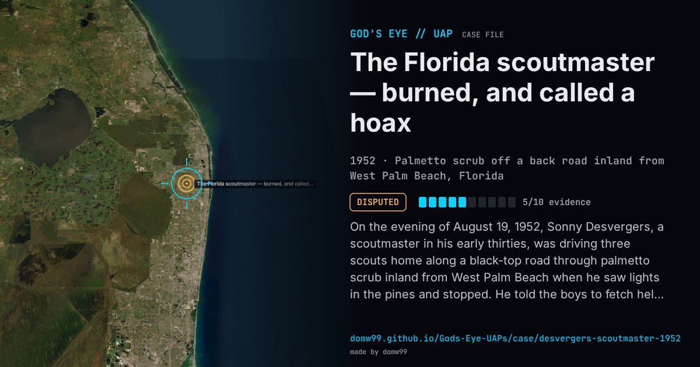

The Florida scoutmaster — burned, and called a hoax

On the evening of August 19, 1952, Sonny Desvergers, a scoutmaster in his early thirties, was driving three scouts home along a black-top road through palmetto scrub inland from West Palm Beach when he saw lights in the pines and stopped. He told the boys to fetch help if he was not back in fifteen minutes and went into the scrub with a machete and two flashlights. By his account he came into a clearing, felt heat, and saw a dark disc about 30 ft above him; when he shone his light on it, a small ball of red fire drifted down, became a mist, and he blacked out. The scouts said they saw a red ball engulf him and ran to a farmhouse; a deputy and a constable found him coming out of the brush, badly frightened, with his forearms, face and cap lightly burned. Ruppelt flew down from Dayton the next day. The burns were like mild sunburn, which a flight surgeon could reproduce with a cigarette lighter. Blue Book found the scoutmaster’s record did not match the story he told of himself, concluded it was a hoax, and called it “the best hoax in UFO history”; but a laboratory found the roots of the grass under where the object was said to hover charred and the blades unharmed, which nobody could explain.
Explanation
Blue Book wrote it off as a hoax, mainly because of the scoutmaster’s record and reputation, the press agent he hired and a re-enactment showing the scouts could not have seen him fall where they said. Ruppelt, who led the investigation, admitted they could not prove a hoax and that the two pieces of physical evidence, tiny burned holes in his cap and grass roots charred as if the ground had been heated to about 300 °F from below, were never explained.
What was seen
Shape: A dark, round, slightly concave craft about 30 ft overhead, with a dome and vanes around the rim; a ball of red fire
Witnesses: D. S. “Sonny” Desvergers, a scoutmaster, and three Boy Scouts in his car; a deputy sheriff and a constable afterwards
Duration: Several minutes
Sources
- Project Blue Book file 1981, West Palm Beach, August 1952 (Internet Archive)
- Edward Ruppelt, The Report on Unidentified Flying Objects (1956), Chapter 12 (Project Gutenberg)
- History.com — the Florida scoutmaster burned by a “UFO”
Browse
- United States
- 1950s
- Disputed
- Close encounters
- Official government documents
- Physical traces
- Police witnesses
- Documented physiological effects
- Spheres and orbs
- Discs and saucers